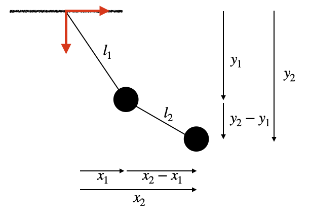
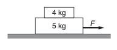
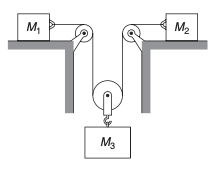

D1.5 Problems#
Problem 1: Constraint and Generalized Coordinates for Motion on a Cylinder#
A particle is constrained to move on the inner surface of a vertical cylinder of radius \(R\) under the influence of gravity.
Write down the constraint equation describing the motion.
Determine how many degrees of freedom the system has.
Suggest a suitable set of generalized coordinates for describing the motion.
Problem solution
Step 1 — Geometry of the system
The particle moves on the surface of a vertical cylinder of radius \(R\).
Using Cartesian coordinates
the cylinder axis is aligned with the vertical \(z\)-direction.
The horizontal cross-section of the cylinder is a circle of radius \(R\).
Step 2 — Constraint equation
Points on the surface of the cylinder satisfy
This equation restricts the particle to remain on the cylindrical surface.
Thus the constraint equation is
This is a holonomic constraint because it depends only on the coordinates.
Step 3 — Degrees of freedom
Without constraints, the particle position requires
so there are
coordinates.
The constraint removes one independent coordinate.
Thus the number of degrees of freedom is
Step 4 — Generalized coordinates
A convenient coordinate system adapted to the geometry of the cylinder is cylindrical coordinates.
Because the radius is fixed,
the remaining independent coordinates are
the azimuthal angle around the cylinder
the vertical position
Thus a suitable set of generalized coordinates is
Step 5 — Coordinate transformation
The Cartesian coordinates can be written in terms of these generalized coordinates:
The constraint is automatically satisfied since
Final Summary
Constraint equation
Degrees of freedom
Suitable generalized coordinates
These coordinates match the geometry of the cylindrical surface and eliminate the need to explicitly solve the constraint.
Problem 2: Constraints and Generalized Coordinates for a Double Pendulum#
A double pendulum consists of two masses \(m_1\) and \(m_2\) connected by rigid massless rods of lengths \(l_1\) and \(l_2\).
Mass \(m_1\) is attached to a fixed pivot.
Mass \(m_2\) is attached to \(m_1\).
The Cartesian coordinates of the masses are
Write down the constraint equations that restrict the motion of the system.
How many degrees of freedom does the system have?
Suggest a convenient choice of generalized coordinates.
Problem solution
Step 1 — Coordinates of the system
Each mass moves in a plane, so their positions are described by
Thus the system initially requires
coordinates.
Below is a sketch of the setup used in this solution.

Step 2 — Constraint from the first rod
The first rod has fixed length \(l_1\), so the distance between the pivot and mass \(m_1\) must remain constant.
Thus
This is the first constraint equation.
Step 3 — Constraint from the second rod
The second rod has fixed length \(l_2\), so the distance between the two masses must remain constant.
Thus
This is the second constraint equation.
Step 4 — Degrees of freedom
The system originally has
coordinates.
There are
independent constraints.
Thus the number of degrees of freedom is
Step 5 — Choice of generalized coordinates
A natural coordinate choice is the angles of the rods relative to the vertical:
These angles uniquely specify the configuration of the system.
Step 6 — Coordinate transformation
Using these generalized coordinates, the Cartesian coordinates become
For mass \(m_1\):
For mass \(m_2\):
These relations automatically satisfy the constraint equations.
Final Summary
Constraint equations
Degrees of freedom
Convenient generalized coordinates
These coordinates describe the configuration of the double pendulum without explicitly solving the constraint equations.
Problem 3: Kinetic Energy in Generalized Coordinates#
A bead of mass \(m\) slides without friction along a straight radial wire that rotates in the horizontal plane about the origin.
The position of the bead is described using the generalized coordinates
where
\(r\) is the distance from the origin along the wire
\(\theta\) is the angle of the wire relative to the \(x\)-axis
The Cartesian coordinates of the bead are therefore
Tasks#
Coordinate transformation
Verify that the particle position can be written as
Velocity components
Using the chain rule, compute the Cartesian velocity components
in terms of \(r,\theta,\dot r,\) and \(\dot\theta\).
Speed of the particle
Using
show that
Kinetic energy
Express the kinetic energy of the particle in terms of the generalized coordinates and generalized velocities.
Conceptual comparison
Explain the physical meaning of the two contributions to the kinetic energy.
Which term corresponds to
motion along the wire, and
motion due to the rotation of the wire?
Problem solution
Relevant equation
Kinetic energy of a particle:
Step 1 — Coordinate transformation
The bead position in Cartesian coordinates is
where \(r\) and \(\theta\) are the generalized coordinates.
Step 2 — Velocity components (chain rule)
Differentiate with respect to time.
For \(x\):
Using the product rule,
For \(y\):
Step 3 — Speed of the particle
The speed is
Substitute the velocity components:
Expanding,
The cross terms cancel.
Using
we obtain
Step 4 — Kinetic energy
Using
we obtain
Step 5 — Physical interpretation
The kinetic energy separates into two contributions
\(\frac12 m\dot r^2\) → motion along the wire
\(\frac12 mr^2\dot\theta^2\) → motion caused by the rotation of the wire
This result shows how generalized coordinates naturally separate different types of motion.
Problem 4: Bead on a Rotating Hoop#
A bead of mass \(m\) slides without friction on a circular hoop of radius \(R\).
The hoop rotates about the vertical \(z\)-axis with a constant angular velocity \(\Omega\).
The bead’s position on the hoop is described by the angle
measured from the lowest point of the hoop.
Because the hoop rotates, the bead’s position in space depends on both
the bead coordinate \(\theta\)
the rotation of the hoop \(\Omega t\).
Tasks#
Coordinate transformation
Show that the Cartesian coordinates of the bead can be written as
Velocity components
Using the chain rule, compute the velocity components
Speed of the particle
Using
show that
Kinetic energy
Write the kinetic energy of the bead in terms of \(\theta\) and \(\dot{\theta}\).
Physical interpretation
Explain the physical meaning of the two terms in the kinetic energy.
Which term corresponds to
motion of the bead along the hoop, and
motion caused by the rotation of the hoop?
Problem solution
Relevant equation
Step 1 — Position of the bead
The bead lies on a circular hoop of radius \(R\).
The vertical position is
The horizontal distance from the axis is
Because the hoop rotates with angular speed \(\Omega\),
Step 2 — Velocity components
Differentiate with respect to time.
For \(x\):
For \(y\):
For \(z\):
Step 3 — Compute the speed
Using
and simplifying (many cross terms cancel), we obtain
Step 4 — Kinetic energy
Substitute into
Step 5 — Interpretation
The kinetic energy contains two contributions.
motion of the bead along the hoop.
motion caused by the rotation of the hoop around the vertical axis.
Thus the bead’s kinetic energy arises from both its motion along the constraint and the motion of the constraint itself.
Problem 5: Particle Constrained to a Sphere#
A particle of mass \(m\) moves on the surface of a sphere of radius \(R\) centered at the origin.
The Cartesian coordinates of the particle are
Tasks#
Constraint equation
Write the equation that constrains the particle to remain on the surface of the sphere.
Degrees of freedom
Determine how many degrees of freedom the system has.
Generalized coordinates
Suggest a convenient set of generalized coordinates for describing the motion.
Coordinate transformation
Express the Cartesian coordinates \((x,y,z)\) in terms of the generalized coordinates.
Velocity components
Using the chain rule, compute the velocity components
Speed of the particle
Using
show that
Kinetic energy
Using
write the kinetic energy in terms of the generalized coordinates and generalized velocities.
Conceptual question
Explain why the kinetic energy contains the factor
multiplying \(\dot{\phi}^2\).
Problem solution
Relevant equation
Step 1 — Constraint equation
Points on the surface of a sphere satisfy
This equation restricts the particle to remain on the spherical surface.
Step 2 — Degrees of freedom
Without constraints the particle position requires
so there are
coordinates.
The constraint removes one independent coordinate.
Thus
Step 3 — Generalized coordinates
A convenient coordinate system adapted to the geometry is spherical coordinates.
Since the radius is fixed,
the remaining independent coordinates are
Step 4 — Coordinate transformation
The Cartesian coordinates are
Step 5 — Velocity components
Differentiate with respect to time.
For \(x\)
For \(y\)
For \(z\)
Step 6 — Speed
Using
and simplifying gives
Step 7 — Kinetic energy
Substitute into
Step 8 — Interpretation
The factor
appears because motion in the \(\phi\) direction occurs along a circle of radius
Thus the speed associated with azimuthal motion is
Problem 6: Particle Constrained to a Helix#
A particle of mass \(m\) moves along a frictionless helical wire wrapped around a vertical cylinder of radius \(R\).
The helix rises vertically as it winds around the cylinder. The height of the particle increases according to
where \(a\) is a constant describing the pitch of the helix.
The position of the particle can be described by the single coordinate
which measures the angle around the cylinder.
Tasks#
Constraint equations
Write the equations that describe the helix in terms of the Cartesian coordinates \((x,y,z)\).
Degrees of freedom
Determine how many degrees of freedom the system has.
Coordinate transformation
Express the Cartesian coordinates of the particle in terms of the generalized coordinate \(\theta\).
Velocity components
Using the chain rule, compute the velocity components
in terms of \(\theta\) and \(\dot{\theta}\).
Speed of the particle
Using
show that
Kinetic energy
Using
express the kinetic energy in terms of the generalized coordinate and generalized velocity.
Conceptual question
Explain why a system with only one degree of freedom can still have motion in three spatial directions.
Problem solution
Relevant equation
Step 1 — Constraint equations
The particle lies on a cylinder of radius \(R\):
The height increases linearly with angle:
Together these equations define the helical path.
Step 2 — Degrees of freedom
The particle position initially requires
so there are
coordinates.
Two constraints exist:
cylindrical surface constraint
helix height relation
Thus
The motion is fully described by the coordinate
Step 3 — Coordinate transformation
The Cartesian coordinates become
Step 4 — Velocity components
Differentiate with respect to time.
For \(x\)
For \(y\)
For \(z\)
Step 5 — Speed
Compute
Substitute the expressions:
Factor:
Using
we obtain
Step 6 — Kinetic energy
Using
we obtain
Step 7 — Interpretation
Although the system has only one degree of freedom, the particle moves simultaneously in
the \(x\) direction
the \(y\) direction
the \(z\) direction
because all three coordinates depend on the single generalized coordinate \(\theta\).
This illustrates a key idea in analytical mechanics:
A system may have motion in several spatial directions while still having only a small number of degrees of freedom.
Problem 7: Kinetic Energy with a Moving Constraint - Bead Sliding on a Rotating Rod#
A bead of mass \(m\) slides without friction along a straight rod that rotates in the horizontal plane about the origin with constant angular velocity \(\Omega\).
The bead’s position along the rod is described by the coordinate
where \(r\) is the distance from the origin along the rod.
Because the rod rotates, the angle of the rod relative to the \(x\)-axis is
Tasks#
Constraint description
Explain why the system has only one degree of freedom.
Coordinate transformation
Write the Cartesian coordinates \((x,y)\) of the bead in terms of \(r\) and \(t\).
Velocity components
Using the chain rule, compute the velocity components
Speed of the particle
Using
show that
Kinetic energy
Write the kinetic energy of the bead in terms of \(r\) and \(\dot r\).
Conceptual question
Explain the physical meaning of the two contributions to the kinetic energy.
Which term corresponds to
motion along the rod, and
motion caused by the rotation of the rod?
Problem solution
Relevant equation
Step 1 — Degrees of freedom
The bead can move only along the rod, so its position is determined by a single coordinate
Therefore
The angle of the rod is not a coordinate of the system because it is fixed by the external rotation
Thus the rod itself is moving, but the bead has only one independent coordinate.
Step 2 — Coordinate transformation
The rod rotates with angular velocity \(\Omega\), so the orientation of the rod changes with time.
The bead position in Cartesian coordinates is therefore
Notice that the position depends on
the generalized coordinate \(r\)
time explicitly
This is an example of a time-dependent coordinate transformation.
Step 3 — Velocity components
Velocity is obtained by differentiating the coordinates with respect to time.
Because \(x\) depends on both \(r\) and \(t\), we apply the chain rule.
For \(x\)
Compute each term:
Thus
Similarly for \(y\)
Step 4 — Speed of the particle
Compute
Substituting the velocity components and simplifying gives
The cross terms cancel.
Step 5 — Kinetic energy
Using
we obtain
Step 6 — Physical interpretation: Moving Constraint
The kinetic energy contains two contributions.
First term
This corresponds to the bead sliding along the rod.
Second term
This arises because the rod itself is rotating.
Even if the bead were fixed at a constant value of \(r\), it would still move in a circle due to the rotation of the rod.
Thus the bead acquires kinetic energy simply because the constraint (the rod) is moving.
This example illustrates an important idea:
Motion of a constraint can contribute to the kinetic energy of a system.
The coordinate transformation
depends explicitly on time, so the velocity contains contributions both from the change in the coordinate \(r\) and from the motion of the constraint itself.
Problem 7: Identifying Symmetry and Invariance#
A particle moves in one dimension under the influence of a force derived from the potential energy
Tasks#
Translation in position
Consider a shift of the coordinate origin
where \(a\) is a constant.
Determine whether the potential energy function is unchanged under this transformation.
Time translation
Suppose the motion is described by
Now consider a shift in time
Does the form of the equation of motion change under this transformation?
Force and invariance
Compute the force
Determine whether the force is invariant under the transformation
Conceptual interpretation
Based on your results:
Does this system have spatial translation symmetry?
Does it have time translation symmetry?
Which physical quantities do you expect to be conserved (you do not need to prove this yet)?
Problem solution
Step 1 — Position translation
Apply
The potential becomes
Expanding,
This is not equal to the original potential
Thus the potential energy changes under spatial translation.
Step 2 — Time translation
We are given the equation of motion
Now consider a shift in the time coordinate
where \(b\) is a constant.
To analyze how the equation changes, we rewrite the motion in terms of the new time variable. Solving for \(t\),
Thus the position can be written as
Derivatives with respect to the new time variable
We now compute derivatives with respect to \(t'\).
First derivative:
Using the chain rule,
Since
we obtain
Thus
Second derivative:
Applying the chain rule again,
Since \(\frac{dt}{dt'} = 1\), we obtain
Substitute into the equation of motion
The equation becomes
Notice that the equation has the same functional form as the original equation
The only change is a shift in the argument of the function.
Conclusion
The equation of motion retains the same structure under the transformation
Thus the system is invariant under time translation.
This means that shifting the origin of time does not change the physics of the motion.
Step 3 — Force
Compute the force:
Now apply the transformation:
This is not equal to \(F(x)\), so the force is not invariant under spatial translation.
Step 4 — Interpretation
The system is not invariant under spatial translation because the force depends explicitly on position relative to a special point (\(x=0\)).
The system is invariant under time translation, since the laws of motion do not depend explicitly on time.
Thus:
No spatial symmetry → no conservation of linear momentum
Time symmetry → conservation of energy
Key Insight
The presence or absence of symmetry tells us whether a system has a corresponding conserved quantity. This connection will be formalized later through Noether’s theorem.
Problem 8: Half Atwood Machine and the Role of the Constraint#
A half Atwood machine consists of a mass \(m_1\) resting on a frictionless horizontal table connected by a light, inextensible string that passes over a frictionless pulley to a hanging mass \(m_2\).
Let the coordinate system be defined as follows:
The origin \(O\) is located to the left of \(m_1\) on the table.
The horizontal coordinate of \(m_1\) is
measured to the right from the origin.
The vertical coordinate of \(m_2\) is
measured downward from the pulley.
Let
be the distance from the origin to the pulley.
Tasks#
Write the constraint equation relating \(x\) and \(y\).
Differentiate the constraint to determine the relations between
and
Apply Newton’s second law to each mass.
Identify exactly where the constraint relation is used in solving the equations.
Determine the acceleration of the system.
Problem solution
Step 1 — Geometry of the string
The string has two variable segments:
The horizontal segment between \(m_1\) and the pulley
The vertical segment from the pulley down to \(m_2\)
Because the string is inextensible, its total length remains constant.
Thus the constraint equation is
where \(L\) is a constant.
Step 2 — Velocity relation
Differentiate the constraint:
which gives
Thus the speeds of the two masses are equal.
Step 3 — Acceleration relation
Differentiate again:
so
The two masses therefore have the same acceleration magnitude in the chosen coordinates.
Step 4 — Newton’s second law
Mass \(m_1\) (horizontal motion)
The only horizontal force is the string tension:
Mass \(m_2\) (vertical motion)
Taking downward as positive,
Step 5 — Use the constraint
From the constraint relation
Substitute into the equation for \(m_2\):
This is the step where the constraint relation connects the motion of the two masses.
Step 6 — Solve for acceleration
From the equation for \(m_1\),
Substitute into the equation above:
Rearranging,
Thus
and since
we obtain
Interpretation
The string constraint
ensures that motion of one mass determines the motion of the other.
Differentiating the constraint twice shows that
so the system behaves as a single-degree-of-freedom system.
Problem 9: Time Translation Invariance#
Consider a particle of mass \(m\) moving under the influence of a constant force \(F\) in one dimension.
Newton’s second law is
and the solution for the motion is
Tasks#
Time translation
Consider a shift of the time coordinate
where \(a\) is a constant.
Write the position of the particle as a function of the new time coordinate \(t'\).
Velocity and acceleration
Compute
and
Show that the acceleration remains unchanged.
Newton’s second law
Substitute your result into Newton’s law
and show that the equation has the same form in the shifted time coordinate.
Energy of the system
The kinetic energy of the particle is
Show that the kinetic energy is unchanged under the transformation
Conceptual question
Explain what it means physically that the laws of motion are invariant under time translation.
Problem solution
Step 1 — Time transformation
Define
so
Substitute into the position function:
This describes the same physical motion, but referenced to a different time origin.
Step 2 — Velocity
Differentiate with respect to \(t'\).
The velocity becomes
Step 3 — Acceleration
Differentiate again:
Thus the acceleration is unchanged by the shift of time origin.
Step 4 — Newton’s second law
Substituting into Newton’s law gives
The equation has the same form after the time shift.
Thus Newton’s law is invariant under time translation.
Step 5 — Kinetic energy
The velocity of the particle is obtained from the original position function
Differentiating with respect to time gives
Now apply the time translation
Solving for \(t\),
Substitute this into the velocity expression:
Thus the velocity written in terms of the shifted time coordinate becomes
Now compute the kinetic energy
Substituting the velocity gives
Notice that this has exactly the same functional form as the original expression for kinetic energy,
except that the constants have shifted slightly. This simply corresponds to choosing a different reference time for describing the motion.
The physical motion of the particle has not changed. Only the labeling of time has changed.
Interpretation
A transformation
represents shifting the origin of time.
If the equations of motion and the physical predictions remain unchanged under this transformation, the system is said to possess time translation symmetry.
Later in the course we will see that this symmetry leads directly to the conservation of energy through Noether’s theorem.
Problem 10
Mass \(M_A = 4.0\) kg rests on top of mass \(M_B = 5.0\) kg that rests on a frictionless table. The coefficient of friction between the two blocks is such that the blocks just start to slip when the horizontal force \(F\) applied to the lower block is \(27\) N. Suppose that now a horizontal force is applied to the upper block. What is its maximum value for the blocks to slide without slipping relative to each other?

This is problem 3.2 in Kleppner and Kolenkow.
Problem 11
The system of masses \(M_1\), \(M_2\), and \(M_3\) in the sketch uses massless pulleys and ropes. The horizontal table is frictionless. Gravity is directed downward.
Draw force diagrams, and show all relevant coordinates.
How are the accelerations related?

This is part of problem 2.10 in Kleppner and Kolenkow.
Problem D2.1
Part 1
My choice of coordinate system and respective non-zero coordinates are shown.

The free-body-diagram is shown below

The red spots are all the interaction points. In this example, we took advantage of the fact that the pulleys and ropes are massless, which means that are just transmitting the forces and play no other role in the dynamics.
Part 2
The length of the rope, \(l\) is constant. With the coordinates chosen, we then have the following equation of constraint
Take twice the time derivative provides us with the relationship between the accelerations